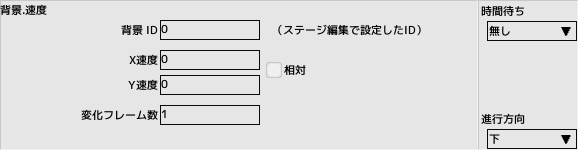
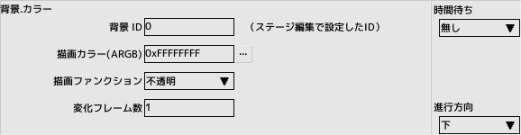
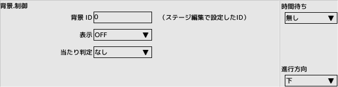
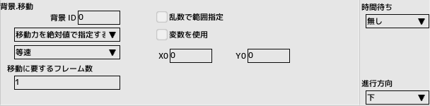

■元のページへ戻る
■元のページへ戻る

速度
背景のスクロール速度を変更します
- 背景ID
ステージ編集の優先リストに登録した背景のID
- XY速度
背景のスクロール速度を相対値、もしくは絶対で指定します
- 変化フレーム数
設定した速度に到達するまでのフレーム数

カラー
- 背景ID
ステージ編集の優先リストに登録した背景のID
- 描画カラー
背景を描画する頂点カラーをARGB32ビットで指定します
- 描画ファンクション
- 不透明
一般的な描画方式で最も高速に描画できます
- 半透明
テクスチャにα値が設定されてるものや、頂点カラーのα値を変更する場合はこの描画方式にする必要があります
- 加算
すでに描画されてる物に色を加算して描画します
- 減算
すでに描画されてる物から色を減算して描画します
- 変化フレーム数
設定したカラーになるまでのフレーム数

制御
- 背景ID
ステージ編集の優先リストに登録した背景のID
- 表示
表示のON/OFFを切り替えます
- 当たり判定
当たり判定のON/OFFを切り替えます

移動
背景をスクロールさせます
- 背景ID
ステージ編集の優先リストに登録した背景のID
- 移動先指定
- 目標座標を絶対値で指定する
移動先の座標を絶対座標で指定します。画面の左上が(0,0)のポイントになります
- 目標座標を相対値で指定する
移動先の座標を現在座標からの相対座標で指定します。正の数なら右下、負の数なら左上方向になります
- 移動力を絶対値で指定する
XY方向の移動力を絶対値指定します
- 移動力を相対値で指定する
XY方向の移動力を指定します
- 移動計算式
座標指定時に限り有効になります
- 等速
目標地点まで等速で移動します
- 加速、急加速
開始地点より加速しながら移動します
- 減速、急減速
目標地点に近づくと減速しながら移動します
- 加減速、急加減速
加速と減速の両方しながら移動します
- 移動に要するフレーム数
目標座標まで到達する時間をフレーム数で指定します、最短で１フレームかかります
- 乱数で範囲指定
移動先の座標、もしくは移動力を範囲指定します
- 変数を使用
座標や移動力の指定に変数を使用します
目標座標を指定する場合、目標へ到達後もそれまでの移動速度はキープされます
停止させるには「目標到達時に停止する」にチェックを入れます
■ページ上部へ戻る